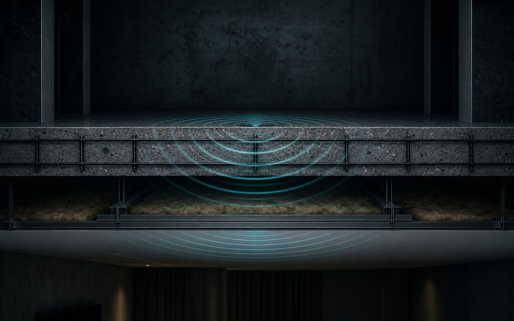

Ударный шум с потолка
Шаги сверху — один из самых частых поводов обратиться к акустику. Люди описывают его по-разному: «топот», «как будто молотком», «дети скачут». Общее у всех — звук приходит не через воздух, а через перекрытие. Но перекрытие — не единственный путь, и это важно понимать до ремонта.

Что такое ударный шум и почему он такой раздражающий
Ударный шум возникает, когда что-то ударяет по жёсткой конструкции: нога о пол, мебель, падающая игрушка, вибрирующая стиралка. Вибрация уходит в плиту перекрытия и распространяется по бетону — стенам, балкам, стоякам. В вашей комнате потолок и стены начинают чуть-чуть дрожать, и вы слышите глухой удар. Это не «громкий звук в воздухе» — это механическая волна в материале. Поэтому он так раздражает даже на умеренной громкости: мозг воспринимает его как физическое воздействие.
Масса одной стены мало помогает против шагов сверху. Нужна либо упругая прослойка у источника — в полу соседа, — либо звукоизоляционная система потолка у вас снизу: демпфер, воздушный зазор, тяжёлый слой, герметизация по периметру. Простой натяжной или подвесной потолок без этих элементов почти не меняет картину — это важно понимать до подписания сметы у подрядчика.
Почему в одних домах слышно сильнее
Тип перекрытия задаёт отправную точку. В панельных новостройках часто тонкая стяжка у соседа и жёсткая плитка — удар передаётся почти без потерь. В старом фонде с деревянными балками картина другая: бывает и громче, и тише, в зависимости от состояния досок и заполнения. Влияют крепление потолка у вас, инженерные проходки через плиту и то, как сосед сделал ремонт.
Типичная история: после ремонта у соседей сверху шаги стали заметнее. У них сняли старый слой, залили жёсткую стяжку прямо на плиту и положили керамогранит без звукоизоляционной прослойки. Удар стал короче и «острее» — плита получает больше энергии. Это не злой умысел, а обычный ремонт без учёта акустики. Иногда помогает разговор: если у соседа ремонт ещё не завершён, плавающая стяжка с демпферной лентой по периметру — разумный шаг.
Ситуация
До ремонта соседей сверху шаги были терпимы. После — слышно каждое движение, особенно каблуки и детские игрушки на полу.
Что проверяет ЦИА
Вероятно, у соседа жёсткая отделка пола без демпфирующего слоя. С вашей стороны — проект потолка; с их — рекомендации по плавающей стяжке, если возможен диалог.
Что покажет замер
Акустический замер отвечает на вопрос: доминирует ли путь через перекрытие или есть заметный вклад стен, шахт, стояков. Без этого легко потратить бюджет на потолок, а шум частично идёт через смежную стену с квартирой сверху — угловая комната, общая шахта. Замер не обещает «минус столько-то децибел» — он строит карту и расставляет приоритеты.
Если планируется ремонт, на основе замера делают проект: конструкция потолка под ваше перекрытие, узлы примыканий, требования к монтажу. Лабораторный индекс Rw на образце материала и реальность на объекте — разные вещи; проект учитывает именно ваш дом, а не каталог.
Типичные ошибки
Первая — навесной потолок «для красоты» без звукоизоляционного слоя. Воздушный зазор в пару сантиметров на высоких частотах что-то даёт, на ударном шуме — почти нет. Вторая — усиление стен, когда проблема явно сверху. Третья — светильники и розетки в потолке без герметизации: каждое отверстие — слабое место. Четвёртая — ждать, пока сосед «сам разберётся», не закладывая потолок в свой ремонт.
Конструкция потолка снизу: что важно
Полноценная система включает демпфирующую подвеску, тяжёлый слой (часто в два листа ГКЛ с развязкой), звукопоглощающий материал в полости и герметизацию по периметру — потолок не должен жёстко упираться в стены. Примыкания — самое уязвимое место; подробнее в статье про мостики и щели. Монтаж по проекту контролируют до закрытия — потом исправлять в разы дороже.
Можно ли решить без согласия соседа
Часто да — за счёт потолка с вашей стороны. Идеальный вариант — ещё и мягкий слой у соседа под финишным покрытием, но это уже его зона. На практике комбинация «потолок у вас + ковёр у них» даёт заметный, хотя и не максимальный эффект. Честная оценка границ — часть работы инженера: мы не обещаем полную тишину, если перекрытие общее и с двух сторон жёсткие полы.
Когда подключать акустика
До монтажа потолка и чистовой отделки. Звукоизоляционный каркас, слои и узлы закладываются на черновом этапе. Если потолок уже натянут или закрыт гипсокартоном без слоя — придётся разбирать или искать компромисс. Подробнее об этапах — в материале про акустику при ремонте. Для квартиры с шумными соседями сверху потолок часто — главный приоритет в проекте.
Как описать проблему для замера
Инженеру нужны не эмоции, а факты. Запишите: в какое время слышны шаги, в какой комнате сильнее всего, есть ли разница у стены и в центре, слышны ли удары от мебели и стиральной машины. Если шаги усилились после ремонта у соседей — отметьте дату. Такой журнал сокращает время на объекте и помогает отделить ударный шум от воздушного, который иногда идёт тем же путём — через плиту и стены. Общий алгоритм диагностики шума от соседей — в статье шум от соседей: с чего начать.
На раннем этапе, когда ремонт только планируется, часто достаточно дистанционной оценки с планом квартиры и описанием. Перед черновой по потолку — замер и проект, чтобы подрядчик получил узлы до монтажа каркаса. Разница между замером и проектом — в материале замер vs проект.
Связанные темы и следующий шаг
Ударный шум часто сочетается с воздушным — голоса и музыка идут теми же путями через плиту. Общий алгоритм диагностики — в статье шум от соседей: с чего начать. Слабые места контура — мостики и щели. Если слышите гул из решётки, причина может быть не в перекрытии — см. шум вентиляции и труб.
Для квартиры с шумными соседями сверху потолок — частый приоритет в проекте. На раннем этапе достаточно дистанционной оценки; перед черновой — замер. Подключать акустику лучше до отделки — см. когда подключать акустика при ремонте. Не путайте звукоизоляцию с внутренней обработкой: звукоизоляция vs акустика.
Частые вопросы
Оставить заявку
Опишите помещение и задачу — подскажем формат работы ЦИА. Если вы прошли Проблемомер, поля заполнятся автоматически.
Задача отправлена